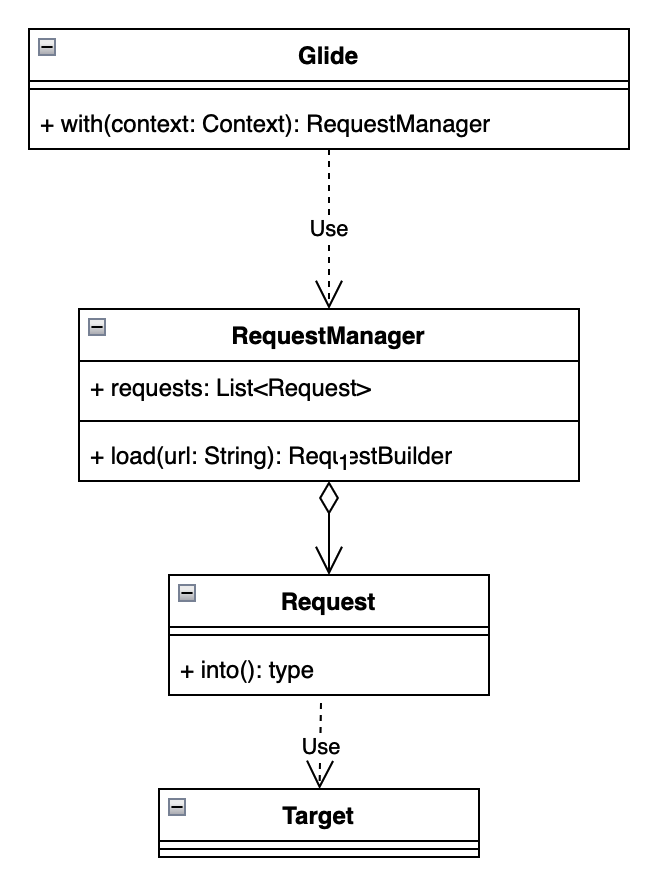
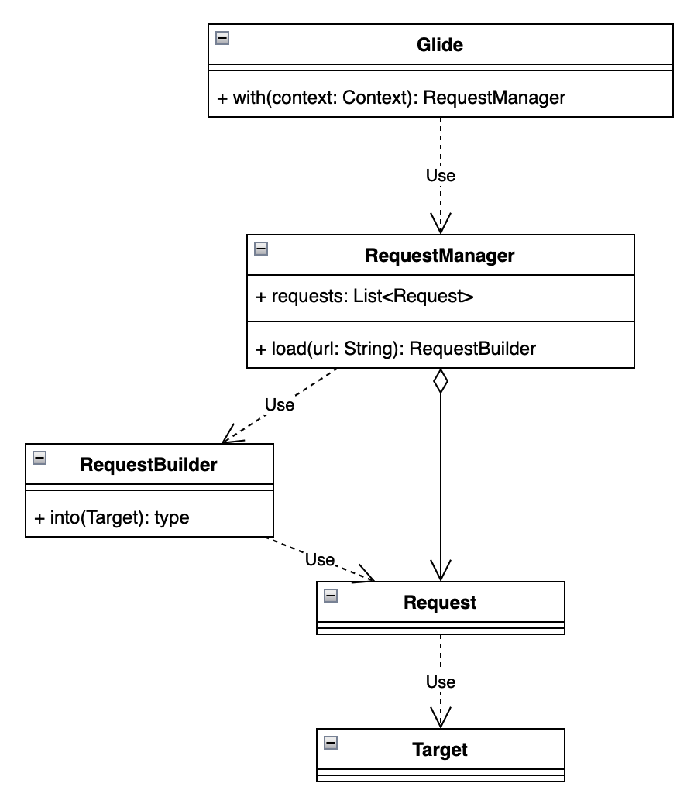
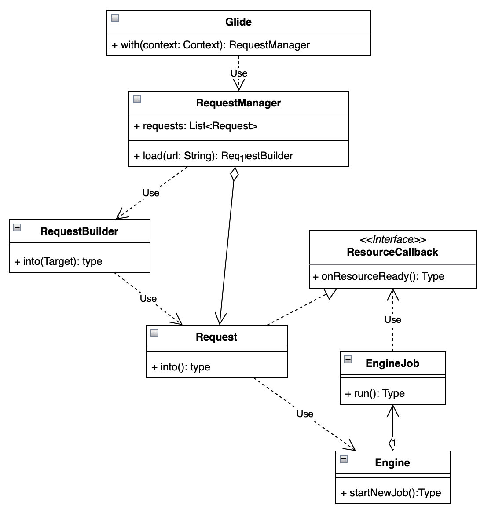
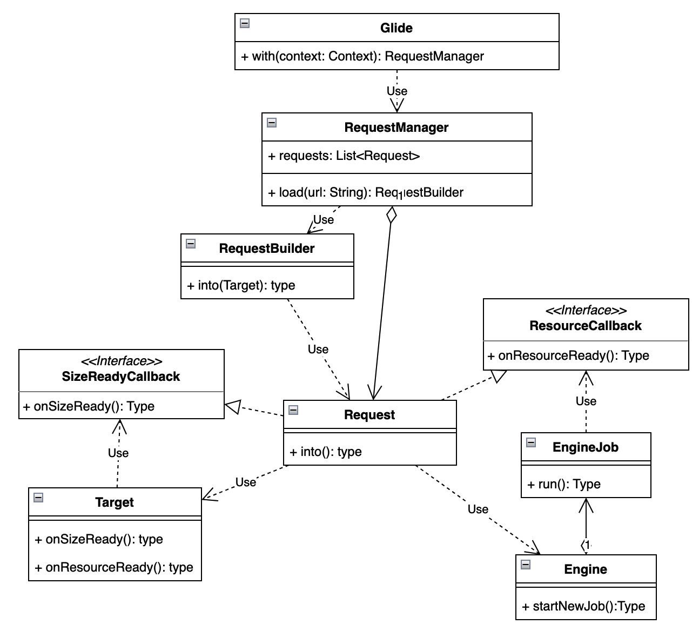
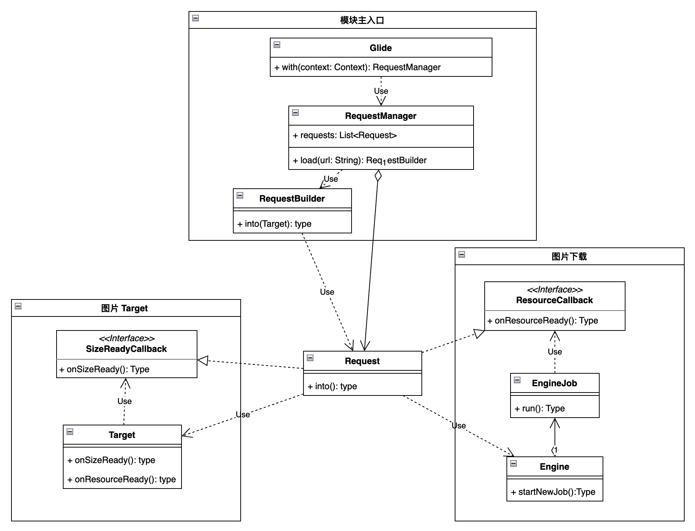

从代码设计看 Glide 之核心功能
接上文。这篇我们主要关注于 Glide 的核心能力，来看一看构建出 Glide 核心的能力的模块或者类是哪些。
示例
如果用过 Glide 肯定记得通过 Glide 加载一个图片最简单的写法是什么。
1 | Glide.with(applicationContext).load("https://xx.image/test").into(view) |
这就是 Glide 最核心的代码。
Glide 中其他的代码和模块都是围绕在这个核心链路周围的。比如通过 load 可以拓展出不同的数据来源，通过 Target 拓展出不同的展示目标。还比如说给 load 的所要加载的数据增加缓存，给 load 本身增加生命周期等等。
所有的这一切都是在加载图片到 View 上这个核心功能基础之上的。
所以，我们这篇文章就从这个核心代码开始。
正文
Glide 的 with 传入的是 Android 的 Context，Glide 主要用 Context 来做生命周期管理。所以本文我们先不考虑 Context 的实例究竟是 Activity 还是 Fragment，我们就默认他只能为全局的 Application（反正本章也不会讲到^_^），关于 Activity 和 Fragment 相关的内容，我们会在后续的生命周期篇章中详述。
从简单的图片加载功能开始
我们先抛开文章开头的 Glide 示例，来思考：如果让你实现一个最简单的图片加载功能，将网络图片加载到 View 上，你会怎么写？
我们的思路肯定是：
下载网络图片
下载完成后，通过回调将图片设置到 View 上
实现方案就是将下载封装到一个类中，然后给出一个回调就行了。
如果我们再考虑多一些：要同时加载的链接可能会有多个，要同时加载的 View 也可能会有多个的情况下，一个类可能就有点放不下了。
我们适当拆点职责出来，将每个下载过程都封装成独立的请求（Request），然后使用一个类（RequestManager）统一管理
那么新的图片加载功能就包含有这几个职责了
Glide：统一对外的类
Request：封装单个下载请求的类，会通过 into 关联到我们要加载的 Target
RequestManager：管理多个请求的类，我们通过 With 来获取 RequestManager
Target：图片要加载到哪个 View 的抽象类（例如 View 可能是 TextView 也可能是 ImageView）
其中 RequestManager 和 Request 是聚合的关系（注意聚合关系和组合关系的区别）
框架核心逻辑尽量内聚
如果这个时候我们想对 Request 请求做一些参数修改和定制的话，这个调用链有个地方就不合适了。
Request 是我们框架内的原始的请求抽象，是不能随意对外暴漏出去，因为这样会影响到我们框架的稳定性。即使使用者有修改定制 Request 的需求，我们也要让使用者按照我们约束的参数来使用，而设计模式中有一个模式非常适合做这个事情。
Builder : 你是在说我吗？你一定是在说我。
（由于 Glide 中太多 Builder 和他的兄弟 Factory 了，所以后边有一期会专门讲 Glide 中 Factory 和 Buidler 的范例，大家可以多多关注点赞一下）
那么我们在这里增加新的一个角色，RequestBuilder，代替 Request 放到调用链中，方便我们对 Request 参数做一些定制。当前，他只有一个功能就是接管了 Request 的构建过程，通过 into 将 Target 传递进来
现在，我们的类图变成这样了
这个时候，如果我们去看示例中 Glide 每一段调用链所返回的对象，你会发现，和我们上图中所展示的一模一样。
我们已经有了一个初步可以使用的图片加载功能版本了。
Request 表示我很难
但实际我们在写的时候，不会将图片下载的全部过程都要交给 Request 来做，因为这个职责太重了，会导致 Request 类变得特别大，后边如果要做缓存，网络库解耦，本地加载等功能的时候，也会频繁修改到这个类，不符合设计原则中的开闭原则
因此我们把图片下载和加载的这部分职责从 Request 拆出来，等我们图片下载和加载准备就绪了再通知 Request 就好，让 Request 专一和 Target（View） 打交道。
对于下载和加载的部分我们这里就简单设计一个任务管理类，内部包含一个线程池，可以支持多任务调度下载加载，并且在每个任务的图片加载结束后通过回调通知 Request。
根据这个需求我们再新增加 2 个角色和 1 个回调：
Engine：负责管理下载任务的运行和调度
EngineJob：是下载图片和加载图片的任务抽象
ResourceCallback：EngineJob 加载资源完成后，通过这个回调通知 Request。
好了，我们在类图中再加几员大将，类图现在如下：

但…
图片尺寸怎么办？
如果你直接就开始按照我们上边设计的去实现，你会发现有一个问题：
我们应该在什么时候去调用框架去做图片加载呢，之所以考虑调用的时机是因为这会关系到两个问题：
View 是不是准备好要展示了？（比如
Visibility.GONE的时候加载图片干什么？嫌电量掉的不够快吗？）图片应该加载多大尺寸呢？
也就是说，最好有个回调 SizeReadyCallback 可以告诉我们开始加载的时机，让我们可以触发我们真实的资源加载，而不至于在 view 原本不打算展示的场景下，还会继续触发加载。
对于 Android 来说，要感知到这个时机，有一个名为 OnPreDrawListener 的回调可以帮到我们
一者，在 onPreDraw 触发的时候，预示着 view 即将要被展示出来了。
二者，可以通过 onPreDraw 不断检测当前 view 的尺寸是否合法了。
这样等我们可以获取到合法的尺寸之后，就通过 SizeReadyCallback 回调给 Request，推动 Request 开始做真正的请求。
那这个 ResourceCallback 谁来调用呢？当然是我们的 Target 了（view），因为他可以知道自己什么时候能真的准备好。
好了，那我们再这个回调补充到我们的类图中
额外补充
如果你直接去看 Glide 主流程的调用链路，盯着 request 一直往下走，会发现在 request 启动之后，没有后续了。那么真正的 load 在哪里开始的，request 并没有体现。
我们会在 Request 的实现 SingleRequest 中看到一个不起眼的代码
1 | target.getSize(this); |
SingleRquest 将自己注册给 Target，而 Target 则监听了 Android 的 ViewObserver
1 | ViewTreeObserver observer = view.getViewTreeObserver(); layoutListener = new SizeDeterminerLayoutListener(this); observer.addOnPreDrawListener(layoutListener); |
在 PreDraw 的时候，Target 就会不断检测当前 View 的尺寸是否合法了。这样等尺寸准备好之后，就通过 SizeReadyCallback 回调通知 Request，推动 Request 开始做真正的请求。
最后检查
看到这里，我们已经完成了自己设计的一个简易图片加载库的核心功能了（其实是Glide的），我们最后以面向对象的思想来看一下每个类的职责：
Glide： 是我们作为图片加载库的总入口，触发图片加载和其他一些功能。同时单例实现。使用 Facade Pattern 设计模式，将内部复杂的使用逻辑封装为简易的使用接口，降低使用者的接入成本。
RequestManager：请求管理者，RequestManager 根据 load 的具体内容创建 RequestBuilder，来让用户进一步定制 Request 的细节。同时，RequestManager 也负责多个 Request 的管理，例如启动暂停等。
RequestBuilder： 将用户传入的参数（例如 Target）和其他 options 一起构建出 Request
Request： 是链接加载到图片的这一行为的抽象。方便我们把控这个过程。而每个 Request 实现
- SizeReadyCallback 接口：这个标识真实应该触发 load 的时机
- ResourceCallback 接口：这个标识资源加载完成，可以设置到 View 的时机
Engine：下载图片和加载图片任务的管理类，提供线程池的能力，方便异步加载和调度系统资源。
EngineJob：下载图片和加载图片的任务抽象。
SizeReadyCallback 接口：只有 target 才知道的自身尺寸准备好的时机（比如 view 要在 onPreDraw 才知道自己的尺寸大小），所以这个 Callback 需要 target 回调
ResourceCallback 接口：图片下载 job 可以知道图片资源什么时候就绪，这个 Callback 需要 Job 回调
最后的最后，我们将其所有的功能简单分为三个模块：
结束语
至此，我们第一个章节内容就结束了。
我们从 Glide 最基础的图片库的核心能力开始，打造出了一个简易的图片框架。包含了基本的图片加载主流程。
当然，这个图片框架拓展性不够，加载的数据很单一，另外缓存能力也缺失，也没法做生命周期管理，可能会造成内存泄漏等等之类的。当然我们后边的系列文章会逐步完善这个框架。
下一期，我们将为这个框架增加生命周期的能力，让这个框架可以实现自我管理。
从代码设计看 Glide 之核心功能